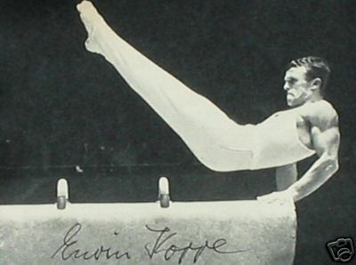

Erwin Koppe (GDR)
1965 European PB Bronze
Medalist
3-Time GDR All-Around Champion

Medal Total
Olympic Games: 1
Bronze
World Championships: 1 Bronze
European Championships: 1 Bronze
Koppe was born in Bayer and moved to the GDR in 1957 to train at DHfK in Leipzig. He was the first East German male gymnast to win a European championships medal.
Competition Results
1957
GDR Championships: 8th AA (Class I)
1958
Leipzig-Kiev Dual Meet: 2nd Team, 3rd R
1959
Berliner Kunstturnen: 3rd AA
CSSR-GDR Dual Meet: 2nd Team, 13th AA
European Championships: 23rd AA, 6th PB
GDR Championships: 1st AA, 1st R, 1st PB, 3rd PH, 5th HB
GDR-FRA Dual Meet: 1st Team, 11th AA
Prague-Leipzig Dual Meet: 2nd Team, 2nd AA
1960
EGY-GDR Dual Meet: 1st Team, 1st AA
GDR Championships: 2nd AA, 1st PB, 1st HB, 6th FX
GDR-CSSR Dual Meet: 2nd Team, 3rd AA
German Olympic Trials: 3rd AA
Kurt Rodel Memorial Tournament: 7th AA
Olympic Games: 7th Team, 50th AA
Warsaw International: 6th AA
1961
GDR Championships: 2nd HB, 6th PB
Kurt Rodel Memorial Tournament: 1st AA
1962
Berliner Kunstturnen: 5th AA
GDR Championships: 1st AA, 1st PB, 3rd V, 1st HB
GDR-CSSR Dual Meet: 2nd Team, 3rd AA
GDR-ROM Dual Meet: 1st Team, 2nd AA
Kiev International: 6th AA
World Championships: 8th Team, 41st AA
1963
BUL-GDR Dual Meet: 2nd Team, 12th AA
European Championships: 26th AA
GDR Championships: 2nd AA, 1st HB, 2nd R, 5th PB, 6th PH, 6th V
GDR-POL Dual Meet: 2nd Team, 8th AA
Werner Seelenbinder Memorial Tournament: 2nd AA
1964
GDR Championships: 1st AA, 1st R, 1st PB, 2nd PH
German Olympic Trials: 4th AA
Olympic Games: 3rd Team, 19th AA
1965
European Championships: 3rd PB, 4th HB, 6th R
POL-GDR Dual Meet: 2nd Team, 4th AA
1966
GDR Championships: 3rd HB, 4th PB, 6th R
World Championships: 3rd Team, 22nd AA
1967
GDR Championships: 2nd HB, 4th R, 5th PH, 6th PB
This page was created on September
03, 2005 and was last updated on December 14, 2020.
© Gymn Forum